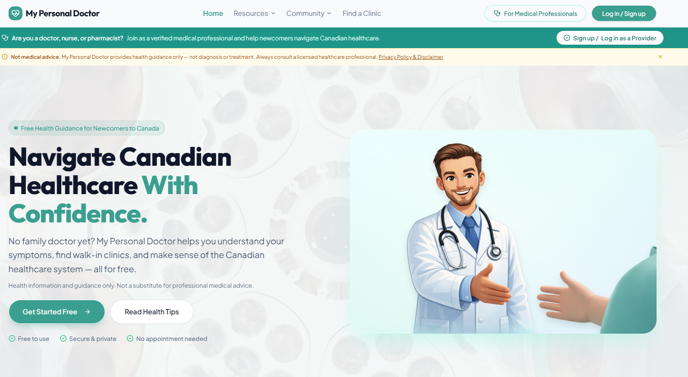

My Personal Doctor — Immigrant Healthcare Access Analysis
Analyzed data and public research to understand healthcare access challenges faced by immigrants and newcomers in Canada, especially the issue of not having a family doctor. The insights inspired the "My Personal Doctor" solution, designed to help newcomers find healthcare services and navigate the Canadian healthcare system.
PythonExcelPower BIData CleaningEDAResearch Analysis